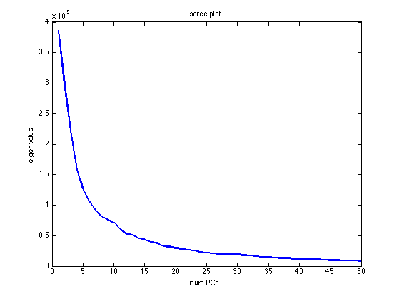
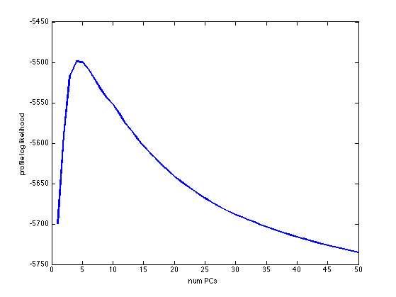
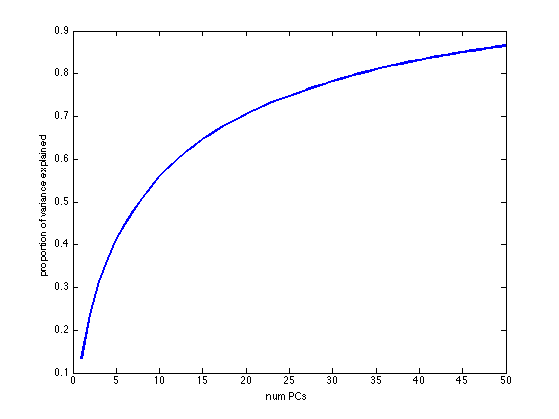
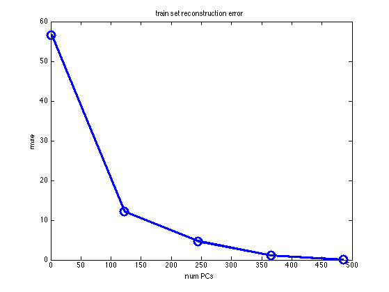
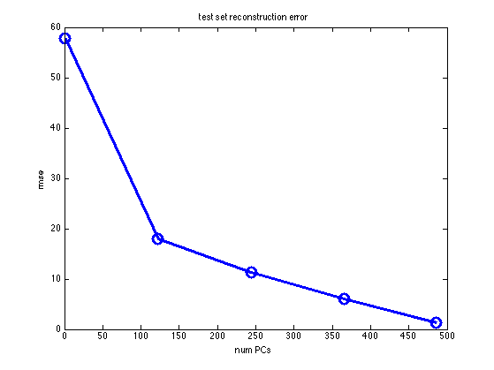
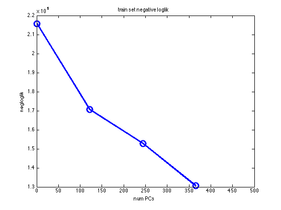
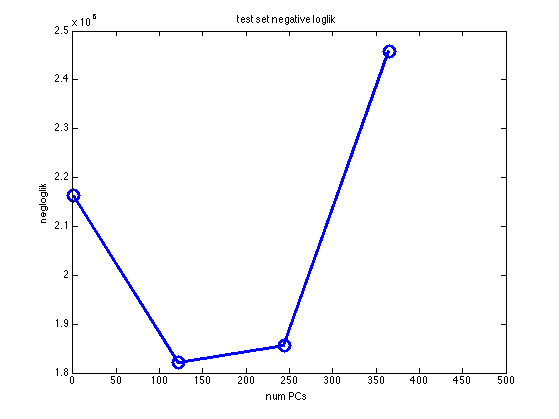

PCA test set reconstruction error vs likelihood as K increases
Show that reconstruction error on test set gets lower as K increases for PCA, but likelihood for PPCA has U shaped curve
%PMTKslow
% This file is from pmtk3.googlecode.com setSeed(0); %load('olivettifaces.mat'); % 0 to 255, from http://www.cs.toronto.edu/~roweis/data.html %X=faces'; clear faces; % 4096x400 (64x64=4096) if 1 loadData('mnistAll'); % mnist structure %train_images: [28x28x60000 uint8] 0 to 255 % test_images: [28x28x10000 uint8] % train_labels: [60000x1 uint8] % test_labels: [10000x1 uint8] h = 28; w = 28; d= h*w; ndx = find(mnist.train_labels==3); ndx = ndx(1:1000); n = length(ndx); X = double(reshape(mnist.train_images(:,:,ndx),[d n]))'; end n = size(X,1); n2 = floor(n/2); X = centerCols(X); Xtrain = X(1:n2,:); Xtest = X((n2+1):end,:); Ks = round(linspace(1, rank(Xtrain), 5)); maxK = max(Ks); [V, Ztrain, evals] = pcaPmtk(Xtrain, maxK); for ki=1:numel(Ks) K = Ks(ki); Vk = V(:,1:K); Ztest = Xtest*Vk; XtestRecon = Ztest*Vk'; errTest = (XtestRecon - Xtest); rmseTest(ki) = sqrt(mean(errTest(:).^2)); Ztrain = Xtrain*Vk; XtrainRecon = Ztrain*Vk'; errTrain = (XtrainRecon - Xtrain); rmseTrain(ki) = sqrt(mean(errTrain(:).^2)); end for ki=1:length(Ks) k = Ks(ki); model = ppcaFit(Xtrain, k); [XtestRecon, rmseTestPPCA(ki)] = ppcaReconstruct(model, Xtest); [XtrainRecon, rmseTrainPPCA(ki)] = ppcaReconstruct(model, Xtrain); [logp] = ppcaLogprob(model, Xtest); llTest(ki) = sum(logp); [logp] = ppcaLogprob(model, Xtrain); llTrain(ki) = sum(logp); end Ksmall = 50; figure; plot(evals(1:Ksmall), 'linewidth', 2) xlabel('num PCs') ylabel('eigenvalue') title('scree plot') printPmtkFigure('pcaOverfitScree') [best, ll] = screeplotChooseDim(evals); figure; plot(ll(1:Ksmall), 'linewidth', 2) xlabel('num PCs') ylabel('profile log likelihood') printPmtkFigure('pcaOverfitProfile') figure; plot(cumsum(evals(1:Ksmall))./sum(evals), 'linewidth', 2) xlabel('num PCs') ylabel('proportion of variance explained') printPmtkFigure('pcaOverfitVar') figure; plot(Ks, rmseTrain(1:length(Ks)), '-o', 'linewidth', 3, 'markersize', 12) ylabel('rmse'); xlabel('num PCs'); title('train set reconstruction error'); printPmtkFigure('pcaOverfitReconTrain') figure; plot(Ks, rmseTest(1:length(Ks)), '-o', 'linewidth', 3, 'markersize', 12) ylabel('rmse'); xlabel('num PCs'); title('test set reconstruction error'); printPmtkFigure('pcaOverfitReconTest') figure; plot(Ks, -llTrain, '-o', 'linewidth', 3, 'markersize', 12) ylabel('negloglik'); xlabel('num PCs'); title('train set negative loglik'); printPmtkFigure('pcaOverfitNllTrain') figure; plot(Ks, -llTest, '-o', 'linewidth', 3, 'markersize', 12) ylabel('negloglik'); xlabel('num PCs'); title('test set negative loglik'); printPmtkFigure('pcaOverfitNllTest') if 0 % sanity check figure; plot(Ks, rmseTestPPCA(1:length(Ks)), '-o', 'linewidth', 3, 'markersize', 12) ylabel('rmse'); xlabel('K'); title('test set reconstruction error PPCA'); figure; plot(Ks, rmseTrainPPCA(1:length(Ks)), '-o', 'linewidth', 3, 'markersize', 12) ylabel('rmse'); xlabel('K'); title('train set reconstruction error PPCA'); end      